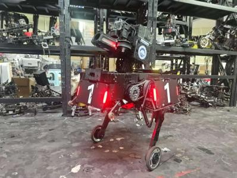
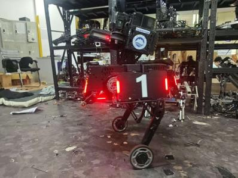
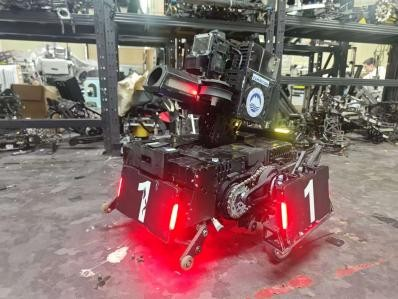

轮腿机器人与嵌入式 MPC
在 RoboMaster 项目中负责过全向步兵、串联腿步兵和串联腿英雄的电控与控制工作。轮腿部分主要做平衡控制、变腿长建模，以及面向 STM32H7 的 MPC 实现。



实现与开源范围
- 基于 CAD 质量和惯量参数建立模型，对不同腿长的状态空间与求解缓存做离线拟合，在线更新控制器参数。
- 参考 TinyMPC 的 ADMM 求解方式，将计算任务接入原 H7 工程；代码保留实际 MCU 任务入口和适配接口。
- 另整理了五自由度广义动量观测器、碰撞判定和 M/C/G 推导，不依赖额外的外力传感器。
开源仓库只包含 MPC 与碰撞检测相关代码，不是整车固件。原数值模型和观测器仍有已知问题，残差超阈值不等于确认碰撞；使用边界与测试情况见仓库说明。